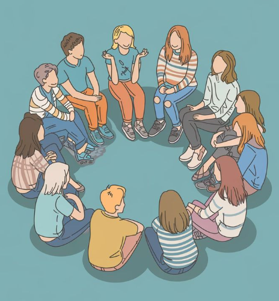
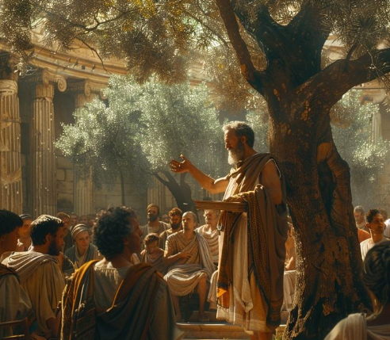
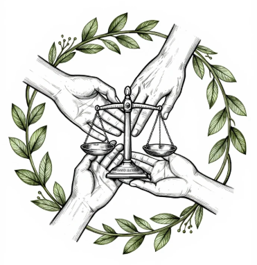

Introducción
El diálogo filosófico no es un debate para ganar, sino una indagación colectiva cuidadosa y respetuosa.
Este tema promueve la práctica de comunidades de diálogo para abordar dilemas éticos, bioéticos, políticos y
contemporáneos con rigor argumentativo y sensibilidad humanista. A diferencia de una mera conversación o discusión
polarizada en redes sociales, el diálogo filosófico busca construir sentido compartido, fortalecer la autonomía de
pensamiento y promover una praxis transformadora que incida en la realidad social. Inspirado en propuestas como la
"comunidad de indagación" de Matthew Lipman (filosofía para niños adaptada al bachillerato), este enfoque fomenta el
desarrollo simultáneo del pensamiento crítico (evaluar argumentos), creativo (generar alternativas) y cuidadoso
(considerar el impacto ético y emocional en los demás), elementos esenciales para formar ciudadanos reflexivos capaces de
enfrentar la complejidad del mundo actual con empatía y responsabilidad ética.
Práctica del diálogo argumentativo
Escucha activa, argumentación clara, respeto a la diversidad de opiniones y rechazo a falacias. El diálogo filosófico
requiere actitudes específicas: apertura mental, disposición a revisar las propias ideas, capacidad de formular preguntas de
seguimiento y habilidad para distinguir entre opiniones, juicios fundamentados y discursos manipuladores.
- Elementos clave: escucha activa (parafrasear y mostrar comprensión genuina), argumentación clara (sustentar con
razones y evidencias), respeto mutuo (reconocer la dignidad del otro incluso en desacuerdo).
- No es debate para ganar, sino indagación colectiva donde todos aprenden y se enriquecen mutuamente.
- Rechazo a falacias comunes: ad hominem (atacar a la persona en vez de la idea), hombre de paja (distorsionar la
posición ajena), falsa dicotomía (presentar solo dos opciones extremas), apelación a la autoridad sin fundamento,
entre otras.
- Importancia en contextos actuales: contrarrestar la polarización digital, los discursos de odio, la desinformación
masiva y el impacto de algoritmos que refuerzan sesgos.

Figura 1: Grupo diverso sentado en círculo conversando → simboliza la comunidad de indagación filosófica

Figura 2: Sócrates debatiendo con discípulos bajo un árbol → representa el origen del diálogo mayéutico y crítico
Aplicación a dilemas actuales
Bioética (eutanasia –autonomía vs. sacralidad de la vida–, edición genética con CRISPR-Cas9 –riesgos de desigualdad
genética, eugenesia encubierta, consentimiento en embriones–, transhumanismo), medio ambiente (justicia climática,
responsabilidad intergeneracional, ecocidio), desigualdad económica y social, violencia estructural y de género, usos
políticos del arte y la imagen en la era de la posverdad y la inteligencia artificial generativa (deepfakes, propaganda
algorítmica).
Dato importante
El diálogo filosófico fomenta autonomía, cuidado ético y creación colectiva de sentido en contextos de polarización.
En 2025-2026, dilemas como la regulación de terapias CRISPR in vivo (ya aprobadas para ciertas enfermedades raras) o
la eutanasia en casos de sufrimiento psíquico refractario exigen espacios de deliberación cuidadosa que equilibren
avances científicos con principios de no maleficencia, justicia y dignidad humana.
Desarrollo del Tema
El diálogo filosófico fomenta autonomía, cuidado ético y creación colectiva de sentido en contextos de polarización. Va más
allá de expresar opiniones: implica construir argumentos, someterlos a crítica racional y buscar mayor comprensión compartida.
Comunidades de indagación
Métodos prácticos: controversia estructurada (presentar posiciones opuestas de forma equilibrada), análisis de casos (dilemas
reales o hipotéticos), filosofía con niños/adolescentes adaptada al bachillerato (inspirada en Matthew Lipman: partir de una
experiencia o texto detonador → formular preguntas colectivas → dialogar regulado por normas de respeto y rigor → llegar a
juicios mejor fundamentados). La comunidad de indagación promueve el pensamiento multidimensional: crítico (detectar falacias,
evaluar evidencias), creativo (generar alternativas) y cuidadoso (considerar implicaciones éticas y emocionales para los demás),
transformando el aula en un espacio democrático de aprendizaje cooperativo.
Praxis y transformación social
El filosofar como intervención: de la reflexión a la acción ética, intercultural y sostenible. Inspirado en Paulo Freire (praxis
como reflexión + acción transformadora) y enfoques de capacidades de Martha Nussbaum, el diálogo no termina en la discusión:
impulsa compromisos concretos contra la desigualdad, la discriminación, el extractivismo y la destrucción ambiental. Filosofar
se convierte en resistencia creativa ante estructuras opresivas y en construcción colectiva de alternativas más justas, inclusivas
y ecológicamente sostenibles.
Ejemplos Visuales
Ejemplo 1: Grupo diverso en círculo conversando → simboliza el diálogo como indagación colectiva y respetuosa
Ejemplo 2: Sócrates con discípulos en debate → representa el arte socrático de cuestionar para llegar a la verdad

Ejemplo 3: Manos unidas formando círculo con elementos de justicia y naturaleza → simboliza la praxis transformadora desde el diálogo
Conclusión
El diálogo filosófico nos convierte en agentes de cambio: capaces de escuchar, argumentar y
actuar con responsabilidad para construir sociedades más justas, inclusivas y habitables.